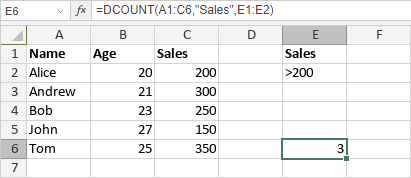

DCOUNT funkcija
Funkcija DCOUNT je jedna od baza podataka funkcija. Koristi se za prebrojavanje ćelija koje sadrže brojeve u polju (koloni) zapisa u listi ili bazi podataka koje zadovoljavaju uslove koje navedete.
Sintaksa
DCOUNT(database, field, criteria)
Funkcija DCOUNT ima sledeće argumente:
| Argument | Opis |
|---|---|
| database | Opseg ćelija koji čini bazu podataka. Mora sadržati naslove kolona u prvom redu. |
| field | Argument koji određuje koje polje (kolonu) treba koristiti. Može biti broj kolone ili naslov kolone u navodnicima. |
| criteria | Opseg ćelija koji sadrži uslove. Mora sadržati najmanje jedan naslov kolone i najmanje jednu ćeliju ispod koje definiše uslov koji treba primeniti na to polje u bazi podataka. Opseg criteria ne sme se preklapati sa database opsegom. |
Napomene
Kako primeniti funkciju DCOUNT.
Primeri
Slika ispod prikazuje rezultat koji vraća funkcija DCOUNT.
